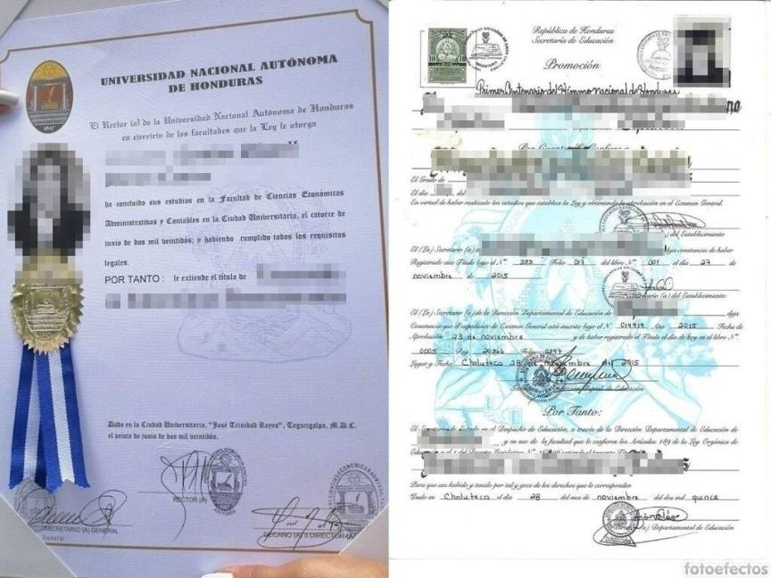
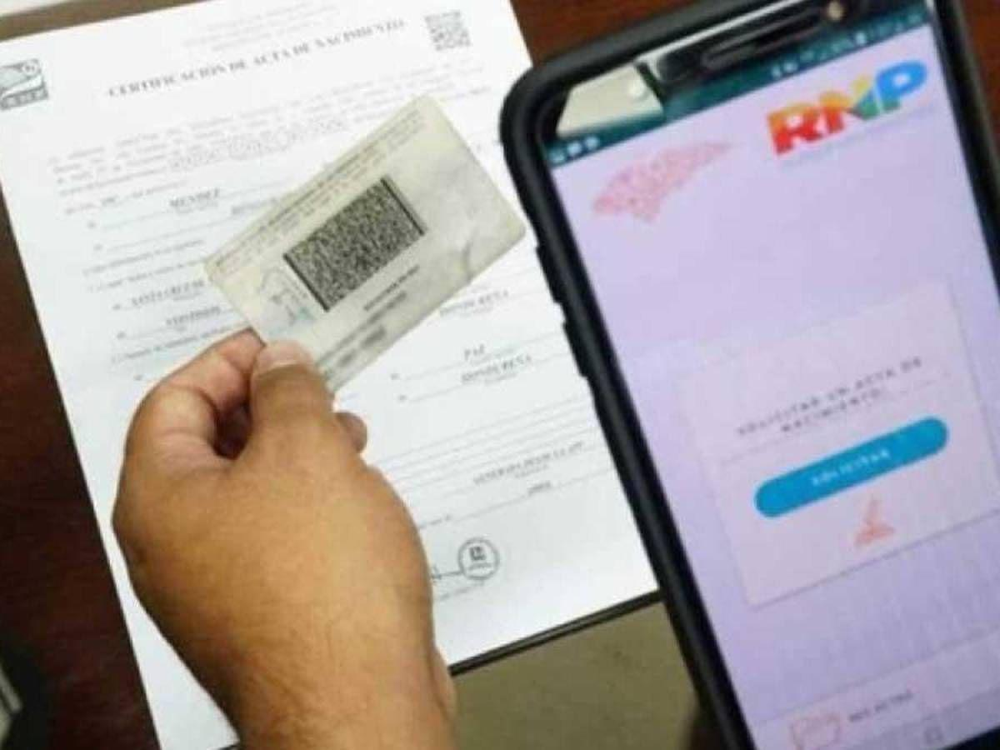
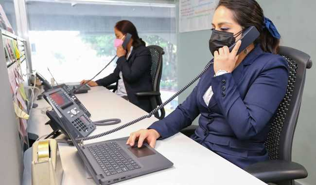

Requisitos de Ingreso
Información oficial y pasos recomendados que deben seguir los aspirantes para ingresar a la carrera.
¿Quien puede postular?
Esta carrera dentro de nuestra institución esta dirigida a jovenes que aspiran y tienen interes en la ciencia aplicada, diseño mecanico, manufactura y mantenimiento industrial.
Documentos del estudiante
-
Acta de nacimiento
Para verificar la edad y la identidad del estudiante
-
Titulo de ciclo o equivalente
Diploma de educacion media o certificado de finalizacion
-
Fotografías
Tiene que ser una fotografia actual del alumno, tamaño carnet y a color

Documentos de los padres o tutores
-
Comprobante de Domicilio
Factura de servicios públicos, contrato de alquiler o estado de cuenta bancario que demuestre la residencia en el distrito escolar.
-
Documentos de identificación
Cédula, DNI o pasaporte de los padres o tutores
-
Poder simple
Si la matrícula la realiza un tercero, se requiere un poder simple firmado por el apoderado.

Pasos a seguir
-
Contacta a la escuela
hable con la secretaria del Itaf para aclarar cuaalquiera duda sobre el proceso
-
Reuna los documentos
Asegurese de tener todos los documentos requeridos; incluso copias si se necesita
-
Presenta los documentos
Entrege todos los documentos en administracion en el plazo que se le haya establecido
